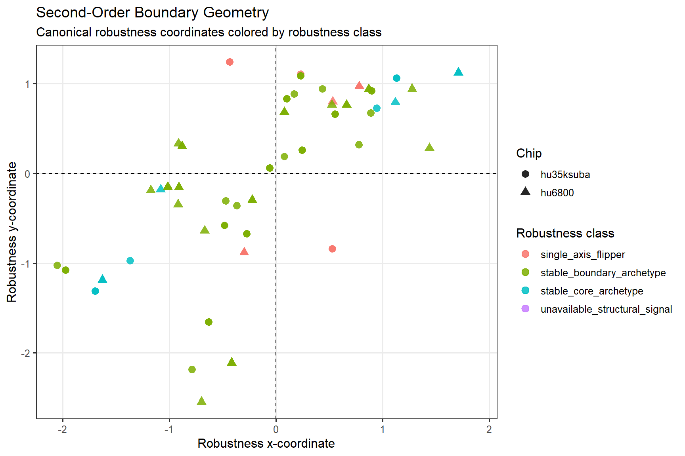
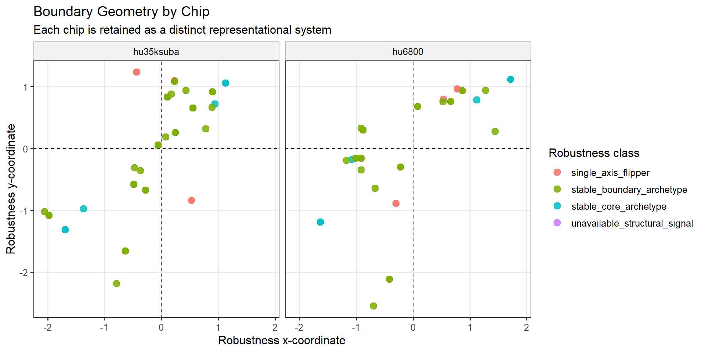
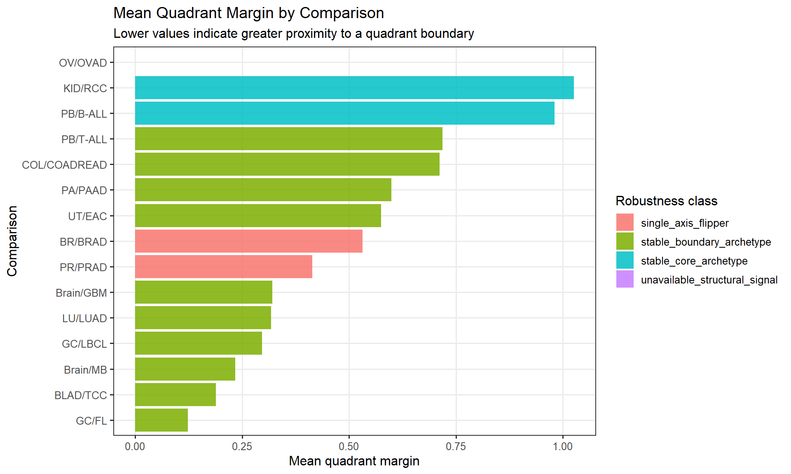
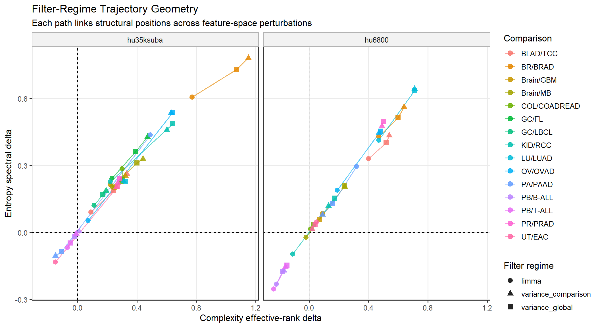

| robustness_class | structural_confidence | n |
|---|---|---|
| stable_boundary_archetype | moderate | 53 |
| stable_core_archetype | high | 12 |
| single_axis_flipper | low | 10 |
| unavailable_structural_signal | unavailable_or_weak | 6 |
Purpose
This chapter introduces second-order perturbational geometry.
First-order geometry established where tumor systems occupy structural state space. Second-order geometry asks:
Are those first-order structural locations stable, recurrent, boundary-sensitive, or representation-dependent?
The purpose of this chapter is to evaluate persistence. A structural position is more persuasive when it remains stable across chips, feature projections, engines, and quadrant boundaries. Conversely, instability is not simply discarded; it is interpreted as projection sensitivity, boundary adjacency, or possible metastable structural behavior.
Central claim. Many transcriptomic systems preserve perturbational position across representational perturbations, while selected systems exhibit boundary-adjacent or projection-sensitive structural drift.
Conceptual Scope
Second-order geometry evaluates the stability structure of the first-order map. It includes:
- quadrant stability,
- boundary distance,
- robustness class,
- filter-regime trajectory geometry,
- chip reproducibility,
- engine agreement,
- engine discordance,
- and structural archetype persistence.
This chapter therefore converts structural location into structural behavior.
Robustness Class Overview
Structural question
What kinds of robustness behavior are represented across the global perturbational map?
The table below summarizes the frequency of robustness classes. These classes provide the high-level ontology for the rest of the chapter.
Interpretive guide
A stable core archetype denotes a system with persistent structural position and relatively large boundary margin. A stable boundary archetype denotes a system whose position is recurrent but close to a quadrant boundary. A single-axis flipper denotes instability concentrated along one coordinate axis. These categories describe perturbational behavior rather than conventional tumor classes.
Boundary Geometry
Structural question
Do tumor systems occupy stable or boundary-sensitive regions of robustness space?
This view visualizes proximity to quadrant boundaries and separates stable-core systems from boundary-sensitive systems.

Structural interpretation
Boundary geometry distinguishes systems whose structural assignments are robust from systems whose positions are near phase boundaries. Boundary-adjacent behavior is important because small coordinate changes can alter quadrant assignment without necessarily implying that the underlying structural signal is meaningless.
Boundary Geometry by Chip
Structural question
Does robustness behavior persist across experimental platforms?
The same robustness space is faceted by chip to preserve each platform as a distinct experimental representation.

Structural interpretation
Cross-chip persistence suggests that robustness behavior is not restricted to a single platform. Chip-specific deviations remain informative and can identify systems whose structural stability is experimentally or representationally sensitive.
Quadrant Margin
Structural question
Which systems occupy stable versus boundary-adjacent perturbational positions?
The quadrant margin describes distance from the nearest quadrant boundary. Systems with small margins are more boundary-sensitive; systems with larger margins are more structurally insulated from quadrant reassignment.
| comparison | robustness_class | structural_confidence | n_runs | mean_quadrant_margin | min_quadrant_margin |
|---|---|---|---|---|---|
| GC/FL | stable_boundary_archetype | moderate | 3 | 0.123 | 0.100 |
| BLAD/TCC | stable_boundary_archetype | moderate | 6 | 0.189 | 0.061 |
| Brain/MB | stable_boundary_archetype | moderate | 6 | 0.234 | 0.153 |
| GC/LBCL | stable_boundary_archetype | moderate | 3 | 0.297 | 0.229 |
| LU/LUAD | stable_boundary_archetype | moderate | 5 | 0.318 | 0.079 |
| Brain/GBM | stable_boundary_archetype | moderate | 6 | 0.320 | 0.152 |
| PR/PRAD | single_axis_flipper | low | 4 | 0.414 | 0.300 |
| BR/BRAD | single_axis_flipper | low | 6 | 0.532 | 0.229 |
| UT/EAC | stable_boundary_archetype | moderate | 6 | 0.575 | 0.281 |
| PA/PAAD | stable_boundary_archetype | moderate | 6 | 0.599 | 0.418 |
| COL/COADREAD | stable_boundary_archetype | moderate | 6 | 0.711 | 0.225 |
| PB/T-ALL | stable_boundary_archetype | moderate | 6 | 0.718 | 0.523 |
| PB/B-ALL | stable_core_archetype | high | 6 | 0.980 | 0.726 |
| KID/RCC | stable_core_archetype | high | 6 | 1.025 | 0.181 |
| OV/OVAD | unavailable_structural_signal | unavailable_or_weak | 6 | NaN | Inf |

Structural interpretation
Low margin does not automatically mean low value. It means that the system occupies a boundary-adjacent region where modest representational changes may alter assignment. Such cases are especially important for identifying metastable or transitional structural behavior.
Filter-Regime Trajectory Geometry
Structural question
How do transcriptomic systems move when the feature-space definition changes?
Filter regimes are treated as controlled perturbations of feature space. Trajectories show how first-order structural location changes across these perturbations.

Structural interpretation
Short or coherent trajectories suggest representational persistence. Long trajectories or boundary-crossing trajectories suggest projection sensitivity. The key point is that feature-space perturbation becomes an experimental probe of structural stability.
Cross-Engine Concordance
Structural question
Do the structural engines point in similar or divergent perturbational directions?
This section summarizes whether the complexity, entropy, MP spectral, and latent-space engines agree on the direction of structural change.
| discordance_class | engine_sign_majority | n |
|---|---|---|
| full_agreement | positive | 55 |
| major_discordance | positive | 11 |
| major_discordance | negative | 10 |
| full_agreement | negative | 3 |
| minor_discordance | negative | 1 |
| minor_discordance | positive | 1 |
| chip | filter_regime | group_label | comparison | complexity_direction | entropy_direction | mp_direction | latent_direction | engine_sign_majority | engine_sign_agreement_fraction | discordance_class | engine_coverage | discordance_archetype |
|---|---|---|---|---|---|---|---|---|---|---|---|---|
| hu35ksuba | limma | carcinomas | BLAD/TCC | positive | positive | positive | positive | positive | 1.000 | full_agreement | four_engine_overlay | full_four_engine_agreement |
| hu35ksuba | limma | carcinomas | BR/BRAD | positive | positive | positive | positive | positive | 1.000 | full_agreement | four_engine_overlay | full_four_engine_agreement |
| hu35ksuba | limma | carcinomas | COL/COADREAD | positive | positive | negative | positive | positive | 0.750 | minor_discordance | four_engine_overlay | mp_divergence_against_classical_latent_alignment |
| hu35ksuba | limma | carcinomas | KID/RCC | positive | positive | negative | negative | positive | 0.500 | major_discordance | four_engine_overlay | complexity_entropy_vs_mp_latent_bifurcation |
| hu35ksuba | limma | carcinomas | PA/PAAD | positive | positive | negative | negative | positive | 0.500 | major_discordance | four_engine_overlay | complexity_entropy_vs_mp_latent_bifurcation |
| hu35ksuba | limma | carcinomas | UT/EAC | negative | negative | positive | positive | positive | 0.500 | major_discordance | four_engine_overlay | complexity_entropy_vs_mp_latent_bifurcation |
| hu35ksuba | limma | blastomas | Brain/GBM | positive | positive | positive | positive | positive | 1.000 | full_agreement | four_engine_overlay | full_four_engine_agreement |
| hu35ksuba | limma | blastomas | Brain/MB | positive | positive | positive | positive | positive | 1.000 | full_agreement | four_engine_overlay | full_four_engine_agreement |
| hu35ksuba | variance_comparison | carcinomas | BLAD/TCC | positive | positive | positive | positive | positive | 1.000 | full_agreement | four_engine_overlay | full_four_engine_agreement |
| hu35ksuba | variance_comparison | carcinomas | BR/BRAD | positive | positive | positive | positive | positive | 1.000 | full_agreement | four_engine_overlay | full_four_engine_agreement |
| hu35ksuba | variance_comparison | carcinomas | COL/COADREAD | positive | positive | positive | positive | positive | 1.000 | full_agreement | four_engine_overlay | full_four_engine_agreement |
| hu35ksuba | variance_comparison | carcinomas | KID/RCC | positive | positive | negative | negative | positive | 0.500 | major_discordance | four_engine_overlay | complexity_entropy_vs_mp_latent_bifurcation |
| hu35ksuba | variance_comparison | carcinomas | LU/LUAD | positive | positive | positive | positive | positive | 1.000 | full_agreement | four_engine_overlay | full_four_engine_agreement |
| hu35ksuba | variance_comparison | carcinomas | PA/PAAD | negative | negative | negative | negative | negative | 1.000 | full_agreement | four_engine_overlay | full_four_engine_agreement |
| hu35ksuba | variance_comparison | carcinomas | PR/PRAD | positive | positive | positive | positive | positive | 1.000 | full_agreement | four_engine_overlay | full_four_engine_agreement |
| hu35ksuba | variance_comparison | carcinomas | UT/EAC | positive | positive | positive | positive | positive | 1.000 | full_agreement | four_engine_overlay | full_four_engine_agreement |
| hu35ksuba | variance_comparison | blastomas | Brain/GBM | positive | positive | positive | positive | positive | 1.000 | full_agreement | four_engine_overlay | full_four_engine_agreement |
| hu35ksuba | variance_comparison | blastomas | Brain/MB | positive | positive | positive | positive | positive | 1.000 | full_agreement | four_engine_overlay | full_four_engine_agreement |
| hu35ksuba | variance_global | carcinomas | BLAD/TCC | positive | positive | positive | positive | positive | 1.000 | full_agreement | four_engine_overlay | full_four_engine_agreement |
| hu35ksuba | variance_global | carcinomas | BR/BRAD | positive | positive | positive | positive | positive | 1.000 | full_agreement | four_engine_overlay | full_four_engine_agreement |
| hu35ksuba | variance_global | carcinomas | COL/COADREAD | positive | positive | positive | positive | positive | 1.000 | full_agreement | four_engine_overlay | full_four_engine_agreement |
| hu35ksuba | variance_global | carcinomas | KID/RCC | positive | positive | negative | negative | positive | 0.500 | major_discordance | four_engine_overlay | complexity_entropy_vs_mp_latent_bifurcation |
| hu35ksuba | variance_global | carcinomas | LU/LUAD | positive | positive | positive | positive | positive | 1.000 | full_agreement | four_engine_overlay | full_four_engine_agreement |
| hu35ksuba | variance_global | carcinomas | PA/PAAD | negative | negative | negative | negative | negative | 1.000 | full_agreement | four_engine_overlay | full_four_engine_agreement |
| hu35ksuba | variance_global | carcinomas | PR/PRAD | positive | positive | positive | positive | positive | 1.000 | full_agreement | four_engine_overlay | full_four_engine_agreement |
| hu35ksuba | variance_global | carcinomas | UT/EAC | positive | positive | positive | positive | positive | 1.000 | full_agreement | four_engine_overlay | full_four_engine_agreement |
| hu35ksuba | variance_global | blastomas | Brain/GBM | positive | positive | positive | positive | positive | 1.000 | full_agreement | four_engine_overlay | full_four_engine_agreement |
| hu35ksuba | variance_global | blastomas | Brain/MB | positive | positive | positive | positive | positive | 1.000 | full_agreement | four_engine_overlay | full_four_engine_agreement |
| hu6800 | limma | carcinomas | BLAD/TCC | positive | positive | positive | positive | positive | 1.000 | full_agreement | four_engine_overlay | full_four_engine_agreement |
| hu6800 | limma | carcinomas | BR/BRAD | positive | positive | positive | positive | positive | 1.000 | full_agreement | four_engine_overlay | full_four_engine_agreement |
| hu6800 | limma | carcinomas | COL/COADREAD | positive | positive | positive | positive | positive | 1.000 | full_agreement | four_engine_overlay | full_four_engine_agreement |
| hu6800 | limma | carcinomas | KID/RCC | negative | negative | positive | negative | negative | 0.750 | minor_discordance | four_engine_overlay | mp_divergence_against_classical_latent_alignment |
| hu6800 | limma | carcinomas | LU/LUAD | positive | positive | positive | positive | positive | 1.000 | full_agreement | four_engine_overlay | full_four_engine_agreement |
| hu6800 | limma | carcinomas | PA/PAAD | positive | positive | negative | negative | positive | 0.500 | major_discordance | four_engine_overlay | complexity_entropy_vs_mp_latent_bifurcation |
| hu6800 | limma | carcinomas | UT/EAC | positive | positive | positive | positive | positive | 1.000 | full_agreement | four_engine_overlay | full_four_engine_agreement |
| hu6800 | limma | blastomas | Brain/GBM | positive | positive | positive | positive | positive | 1.000 | full_agreement | four_engine_overlay | full_four_engine_agreement |
| hu6800 | limma | blastomas | Brain/MB | negative | negative | positive | positive | positive | 0.500 | major_discordance | four_engine_overlay | complexity_entropy_vs_mp_latent_bifurcation |
| hu6800 | variance_comparison | carcinomas | BLAD/TCC | positive | positive | positive | positive | positive | 1.000 | full_agreement | four_engine_overlay | full_four_engine_agreement |
| hu6800 | variance_comparison | carcinomas | BR/BRAD | positive | positive | positive | positive | positive | 1.000 | full_agreement | four_engine_overlay | full_four_engine_agreement |
| hu6800 | variance_comparison | carcinomas | COL/COADREAD | positive | positive | positive | positive | positive | 1.000 | full_agreement | four_engine_overlay | full_four_engine_agreement |
| hu6800 | variance_comparison | carcinomas | KID/RCC | positive | positive | negative | negative | positive | 0.500 | major_discordance | four_engine_overlay | complexity_entropy_vs_mp_latent_bifurcation |
| hu6800 | variance_comparison | carcinomas | LU/LUAD | positive | positive | positive | positive | positive | 1.000 | full_agreement | four_engine_overlay | full_four_engine_agreement |
| hu6800 | variance_comparison | carcinomas | PA/PAAD | positive | positive | negative | negative | positive | 0.500 | major_discordance | four_engine_overlay | complexity_entropy_vs_mp_latent_bifurcation |
| hu6800 | variance_comparison | carcinomas | PR/PRAD | positive | positive | positive | positive | positive | 1.000 | full_agreement | four_engine_overlay | full_four_engine_agreement |
| hu6800 | variance_comparison | carcinomas | UT/EAC | positive | positive | positive | positive | positive | 1.000 | full_agreement | four_engine_overlay | full_four_engine_agreement |
| hu6800 | variance_comparison | blastomas | Brain/GBM | positive | positive | positive | positive | positive | 1.000 | full_agreement | four_engine_overlay | full_four_engine_agreement |
| hu6800 | variance_comparison | blastomas | Brain/MB | positive | positive | positive | positive | positive | 1.000 | full_agreement | four_engine_overlay | full_four_engine_agreement |
| hu6800 | variance_global | carcinomas | BLAD/TCC | positive | positive | positive | positive | positive | 1.000 | full_agreement | four_engine_overlay | full_four_engine_agreement |
| hu6800 | variance_global | carcinomas | BR/BRAD | positive | positive | positive | positive | positive | 1.000 | full_agreement | four_engine_overlay | full_four_engine_agreement |
| hu6800 | variance_global | carcinomas | COL/COADREAD | positive | positive | positive | positive | positive | 1.000 | full_agreement | four_engine_overlay | full_four_engine_agreement |
| hu6800 | variance_global | carcinomas | KID/RCC | positive | positive | negative | negative | positive | 0.500 | major_discordance | four_engine_overlay | complexity_entropy_vs_mp_latent_bifurcation |
| hu6800 | variance_global | carcinomas | LU/LUAD | positive | positive | positive | positive | positive | 1.000 | full_agreement | four_engine_overlay | full_four_engine_agreement |
| hu6800 | variance_global | carcinomas | PA/PAAD | positive | positive | negative | negative | positive | 0.500 | major_discordance | four_engine_overlay | complexity_entropy_vs_mp_latent_bifurcation |
| hu6800 | variance_global | carcinomas | PR/PRAD | positive | positive | positive | positive | positive | 1.000 | full_agreement | four_engine_overlay | full_four_engine_agreement |
| hu6800 | variance_global | carcinomas | UT/EAC | positive | positive | positive | positive | positive | 1.000 | full_agreement | four_engine_overlay | full_four_engine_agreement |
| hu6800 | variance_global | blastomas | Brain/GBM | positive | positive | positive | positive | positive | 1.000 | full_agreement | four_engine_overlay | full_four_engine_agreement |
| hu6800 | variance_global | blastomas | Brain/MB | positive | positive | positive | positive | positive | 1.000 | full_agreement | four_engine_overlay | full_four_engine_agreement |
| hu35ksuba | limma | lymphomas | GC/FL | positive | positive | positive | NA | positive | 1.000 | full_agreement | three_engine_core_latent_unavailable | full_three_engine_core_agreement_latent_unavailable |
| hu35ksuba | limma | lymphomas | GC/LBCL | positive | positive | positive | NA | positive | 1.000 | full_agreement | three_engine_core_latent_unavailable | full_three_engine_core_agreement_latent_unavailable |
| hu35ksuba | limma | leukemias | PB/B-ALL | negative | negative | positive | NA | negative | 0.667 | major_discordance | three_engine_core_latent_unavailable | mp_divergence_from_classical_spectrum_latent_unavailable |
| hu35ksuba | limma | leukemias | PB/T-ALL | negative | negative | positive | NA | negative | 0.667 | major_discordance | three_engine_core_latent_unavailable | mp_divergence_from_classical_spectrum_latent_unavailable |
| hu35ksuba | variance_comparison | lymphomas | GC/FL | positive | positive | positive | NA | positive | 1.000 | full_agreement | three_engine_core_latent_unavailable | full_three_engine_core_agreement_latent_unavailable |
| hu35ksuba | variance_comparison | lymphomas | GC/LBCL | positive | positive | positive | NA | positive | 1.000 | full_agreement | three_engine_core_latent_unavailable | full_three_engine_core_agreement_latent_unavailable |
| hu35ksuba | variance_comparison | leukemias | PB/B-ALL | positive | positive | positive | NA | positive | 1.000 | full_agreement | three_engine_core_latent_unavailable | full_three_engine_core_agreement_latent_unavailable |
| hu35ksuba | variance_comparison | leukemias | PB/T-ALL | negative | negative | positive | NA | negative | 0.667 | major_discordance | three_engine_core_latent_unavailable | mp_divergence_from_classical_spectrum_latent_unavailable |
| hu35ksuba | variance_global | lymphomas | GC/FL | positive | positive | positive | NA | positive | 1.000 | full_agreement | three_engine_core_latent_unavailable | full_three_engine_core_agreement_latent_unavailable |
| hu35ksuba | variance_global | lymphomas | GC/LBCL | positive | positive | positive | NA | positive | 1.000 | full_agreement | three_engine_core_latent_unavailable | full_three_engine_core_agreement_latent_unavailable |
| hu35ksuba | variance_global | leukemias | PB/B-ALL | negative | negative | positive | NA | negative | 0.667 | full_agreement | three_engine_core_latent_unavailable | full_three_engine_core_agreement_latent_unavailable |
| hu35ksuba | variance_global | leukemias | PB/T-ALL | negative | negative | positive | NA | negative | 0.667 | major_discordance | three_engine_core_latent_unavailable | mp_divergence_from_classical_spectrum_latent_unavailable |
| hu6800 | limma | leukemias | PB/B-ALL | negative | negative | positive | NA | negative | 0.667 | major_discordance | three_engine_core_latent_unavailable | mp_divergence_from_classical_spectrum_latent_unavailable |
| hu6800 | limma | leukemias | PB/T-ALL | negative | negative | positive | NA | negative | 0.667 | major_discordance | three_engine_core_latent_unavailable | mp_divergence_from_classical_spectrum_latent_unavailable |
| hu6800 | variance_comparison | leukemias | PB/B-ALL | negative | negative | positive | NA | negative | 0.667 | major_discordance | three_engine_core_latent_unavailable | mp_divergence_from_classical_spectrum_latent_unavailable |
| hu6800 | variance_comparison | leukemias | PB/T-ALL | negative | negative | positive | NA | negative | 0.667 | major_discordance | three_engine_core_latent_unavailable | mp_divergence_from_classical_spectrum_latent_unavailable |
| hu6800 | variance_global | leukemias | PB/B-ALL | negative | negative | positive | NA | negative | 0.667 | major_discordance | three_engine_core_latent_unavailable | mp_divergence_from_classical_spectrum_latent_unavailable |
| hu6800 | variance_global | leukemias | PB/T-ALL | negative | negative | positive | NA | negative | 0.667 | major_discordance | three_engine_core_latent_unavailable | mp_divergence_from_classical_spectrum_latent_unavailable |
| hu35ksuba | limma | carcinomas | OV/OVAD | positive | positive | NA | positive | positive | 1.000 | full_agreement | three_engine_core_latent_unavailable | full_three_engine_core_agreement_latent_unavailable |
| hu35ksuba | variance_comparison | carcinomas | OV/OVAD | positive | positive | NA | positive | positive | 1.000 | full_agreement | three_engine_core_latent_unavailable | full_three_engine_core_agreement_latent_unavailable |
| hu35ksuba | variance_global | carcinomas | OV/OVAD | positive | positive | NA | positive | positive | 1.000 | full_agreement | three_engine_core_latent_unavailable | full_three_engine_core_agreement_latent_unavailable |
| hu6800 | limma | carcinomas | OV/OVAD | positive | positive | NA | positive | positive | 1.000 | full_agreement | three_engine_core_latent_unavailable | full_three_engine_core_agreement_latent_unavailable |
| hu6800 | variance_comparison | carcinomas | OV/OVAD | positive | positive | NA | positive | positive | 1.000 | full_agreement | three_engine_core_latent_unavailable | full_three_engine_core_agreement_latent_unavailable |
| hu6800 | variance_global | carcinomas | OV/OVAD | positive | positive | NA | positive | positive | 1.000 | full_agreement | three_engine_core_latent_unavailable | full_three_engine_core_agreement_latent_unavailable |
Structural interpretation
Engine concordance supports the interpretation that distinct structural projections are detecting related perturbational organization. Engine discordance is also informative: it can reveal systems in which covariance-rank structure, spectral entropy, random-matrix organization, and latent geometry reorganize in different directions.
Engine Correlation Structure
Structural question
Which structural descriptors move together across the global perturbational field?
Cross-engine correlations help identify descriptor families that capture related aspects of transcriptomic reorganization.
| metric_x | metric_y | engine_x | engine_y | method | n_complete | estimate | p_value | p_fdr | abs_estimate | engine_pair |
|---|---|---|---|---|---|---|---|---|---|---|
| complexity__effrank_delta | entropy__spectral_delta | complexity | entropy | spearman | 81 | 0.992 | 0.000 | 0.000 | 0.992 | complexity__entropy |
| complexity__kappa_delta | complexity__composite_kappa_delta | complexity | complexity | spearman | 81 | 0.974 | 0.000 | 0.000 | 0.974 | complexity__complexity |
| latent__pr_delta | latent__eig_entropy_delta | latent | latent | spearman | 63 | 0.966 | 0.000 | 0.000 | 0.966 | latent__latent |
| latent__pr_delta | latent__anisotropy_delta | latent | latent | spearman | 11 | -0.955 | 0.000 | 0.000 | 0.955 | latent__latent |
| mp__spectral_entropy_delta | mp__participation_ratio_delta | mp | mp | spearman | 75 | 0.929 | 0.000 | 0.000 | 0.929 | mp__mp |
| latent__eig_entropy_delta | latent__anisotropy_delta | latent | latent | spearman | 11 | -0.927 | 0.000 | 0.000 | 0.927 | latent__latent |
| mp__participation_ratio_delta | mp__largest_eigenvalue_fraction_delta | mp | mp | spearman | 75 | -0.923 | 0.000 | 0.000 | 0.923 | mp__mp |
| entropy__shannon_delta | mp__spectral_entropy_delta | entropy | mp | spearman | 75 | 0.904 | 0.000 | 0.000 | 0.904 | entropy__mp |
| mp__spectral_entropy_delta | latent__anisotropy_delta | mp | latent | spearman | 10 | -0.891 | 0.001 | 0.003 | 0.891 | mp__latent |
| mp__spectral_entropy_delta | mp__largest_eigenvalue_fraction_delta | mp | mp | spearman | 75 | -0.888 | 0.000 | 0.000 | 0.888 | mp__mp |
| mp__spectral_entropy_delta | latent__pr_delta | mp | latent | spearman | 57 | 0.883 | 0.000 | 0.000 | 0.883 | mp__latent |
| mp__excess_spectral_mass_delta | latent__anisotropy_delta | mp | latent | spearman | 10 | 0.867 | 0.003 | 0.006 | 0.867 | mp__latent |
| complexity__kappa_delta | entropy__shannon_delta | complexity | entropy | spearman | 81 | 0.855 | 0.000 | 0.000 | 0.855 | complexity__entropy |
| mp__spectral_entropy_delta | latent__eig_entropy_delta | mp | latent | spearman | 57 | 0.847 | 0.000 | 0.000 | 0.847 | mp__latent |
| complexity__composite_kappa_delta | entropy__shannon_delta | complexity | entropy | spearman | 81 | 0.797 | 0.000 | 0.000 | 0.797 | complexity__entropy |
| mp__participation_ratio_delta | latent__anisotropy_delta | mp | latent | spearman | 10 | -0.782 | 0.012 | 0.023 | 0.782 | mp__latent |
| complexity__kappa_delta | mp__spectral_entropy_delta | complexity | mp | spearman | 75 | 0.763 | 0.000 | 0.000 | 0.763 | complexity__mp |
| mp__largest_eigenvalue_fraction_delta | latent__eig_entropy_delta | mp | latent | spearman | 57 | -0.735 | 0.000 | 0.000 | 0.735 | mp__latent |
| entropy__shannon_delta | latent__pr_delta | entropy | latent | spearman | 63 | 0.730 | 0.000 | 0.000 | 0.730 | entropy__latent |
| entropy__shannon_delta | mp__participation_ratio_delta | entropy | mp | spearman | 75 | 0.728 | 0.000 | 0.000 | 0.728 | entropy__mp |
Structural interpretation
Strong correlations between descriptors suggest shared structural signal; weaker or opposing correlations identify complementary dimensions of perturbational organization. The purpose is not to collapse all engines into one score, but to understand how their structural views align or diverge.
Interpretation
Second-order geometry represents the stability structure of the first-order perturbational map.
The first-order chapter established where tumor systems occupy structural state space. This chapter evaluates whether those positions persist across chips, filters, engines, and quadrant boundaries. Together, the two chapters create the global structural context needed for interpreting individual normal–tumor comparison reports as local case studies within a broader perturbational topology.